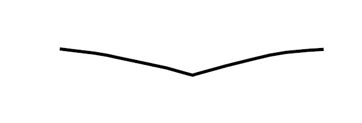
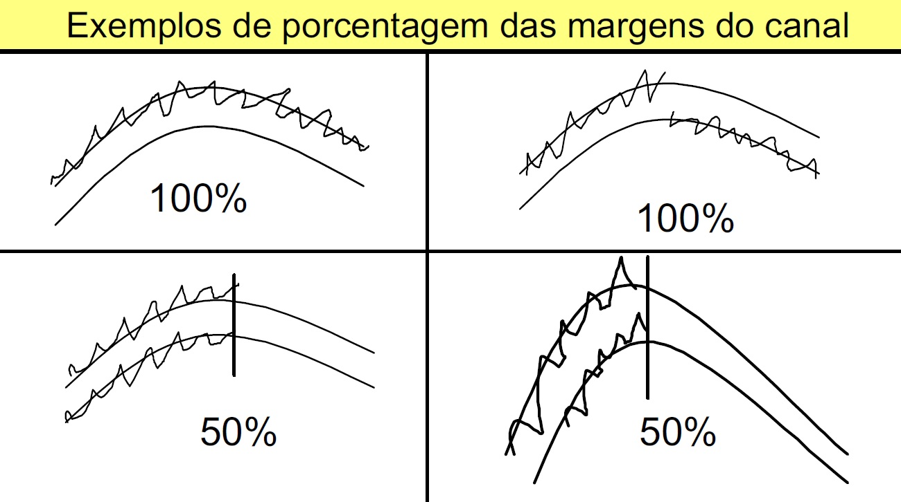

Formulario Rios
ENCAIXAMENTO DO CANAL
Padrão do Canal
Canal Único
Canal anastomosado (complexo)
Canal entrelaçado
Encaixamento Do Canal
Vale em «V» raso
Vale em «V» profundo
Garganta
Concavo/abaulado
Vale assimétrico
Vale em «U»
Vale não perceptível

Características Do Encaixamento
Rocha (o canal formado predominantemente pela rocha; formato de garganta)
Vale (canal encaixado em um vale estreito em formato de V)
Terraço (canal encaixado devido a sua incisão nos depósitos aluviais )
Alterações antrópicas nas margens (encaixamento em gabião, aterros, diques, estradas, etc)
Não há feições de encaixamento
Porcentagem do comp. do canal com a margem em contato com a feição de encaixamento

Largura do leito sazonal
Largura do vale (Média de estimativa visual)
Se você não pode ver as bordas do vale, registre a distância que você pode ver e marque a opçao ao lado.
Cancelar
Próximo